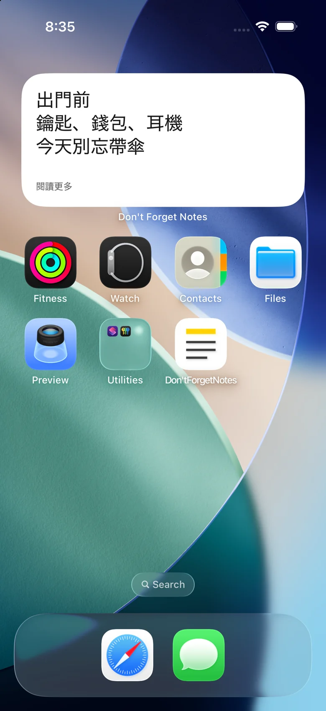
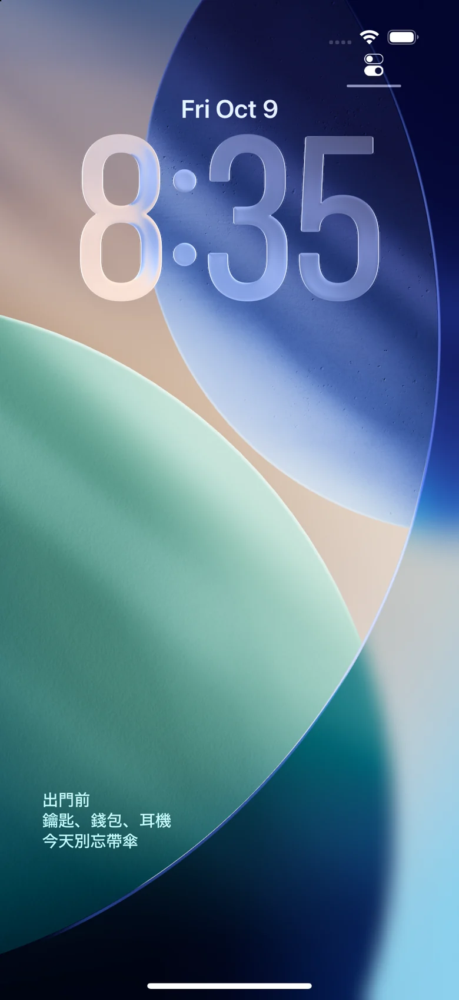

不想忘記的便箋， 放在主畫面和鎖定畫面上。
隨手記下，用大字主畫面小工具和 iPhone 鎖定畫面小工具，讓需要的便箋隨時可見。Android 鎖定畫面功能適用於支援的裝置。
查看使用方式iPhone / Android · 即將推出


放置一次，隨時可見。
01
打開便箋開始寫，內容會自動儲存。
02
首次選擇便箋和位置並加入小工具。
03
修改同一則便箋，小工具會同步更新，無須重複加入。
簡單記錄，輕鬆閱讀。
三種文字大小
標準、大、特大。較長的文字可點選查看全文。
主畫面和鎖定畫面都能看
支援 iPhone 主畫面的小、中、大尺寸，以及鎖定畫面的矩形、圓形和單行小工具。Android 支援主畫面小工具，相容裝置也支援鎖定畫面小工具。
支援10種語言
日文、英文、韓文、簡體中文、繁體中文、西班牙文、法文、德文、義大利文、巴西葡萄牙文。
廣告
免費使用，便箋清單下方顯示一則橫幅廣告。編輯頁和小工具無廣告，廣告載入失敗也不影響使用。